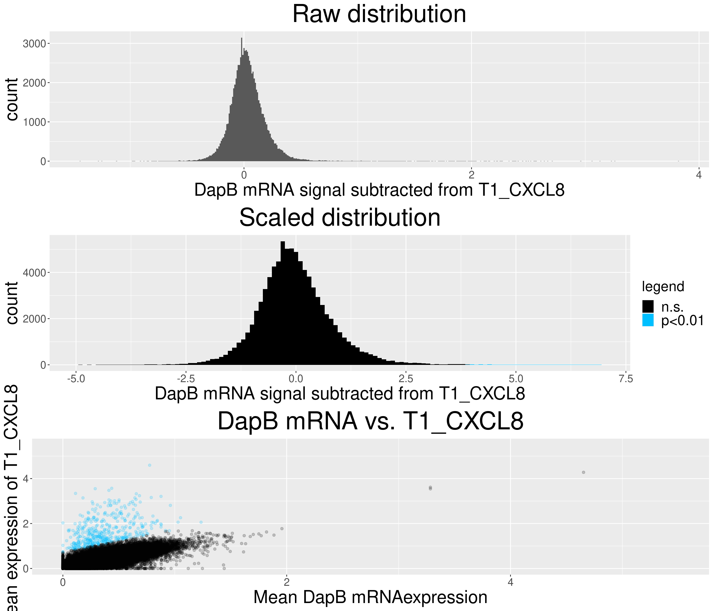
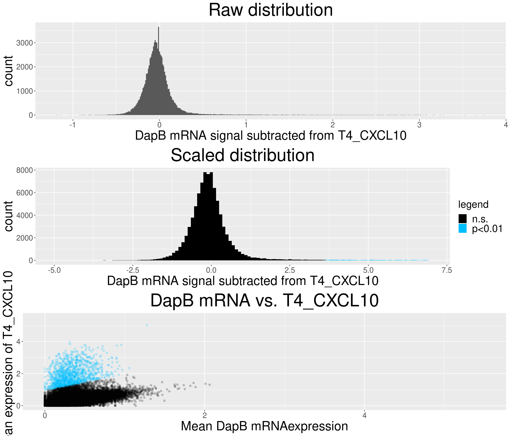
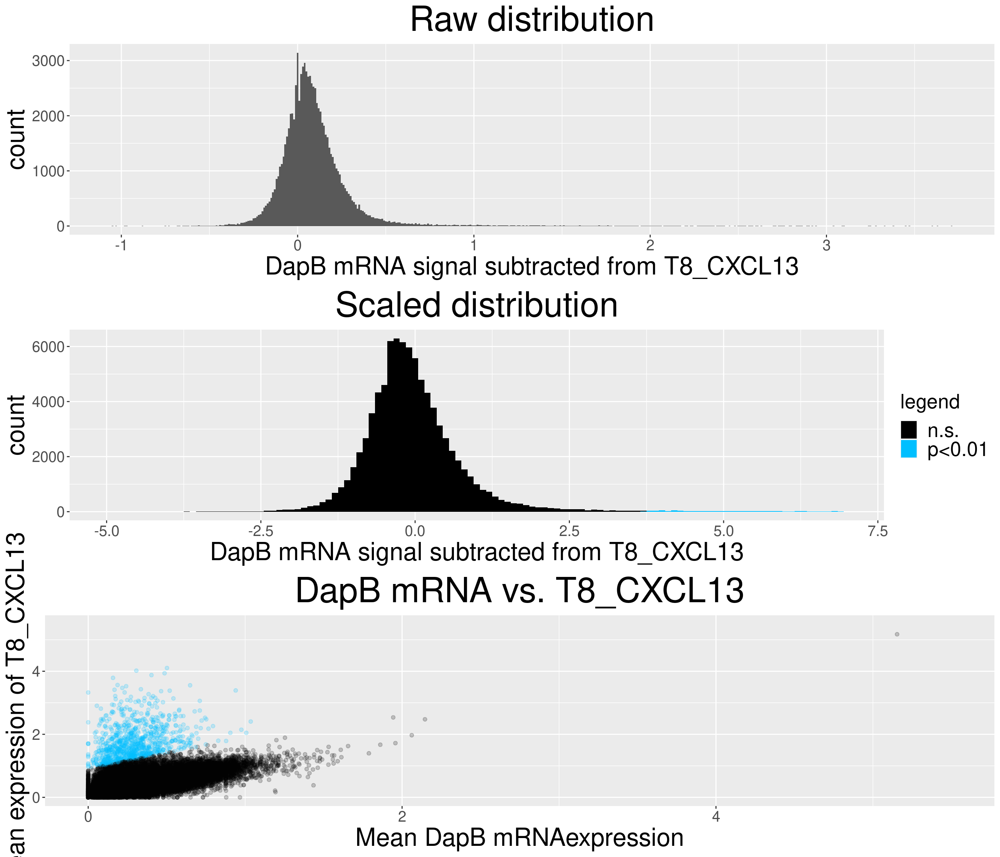
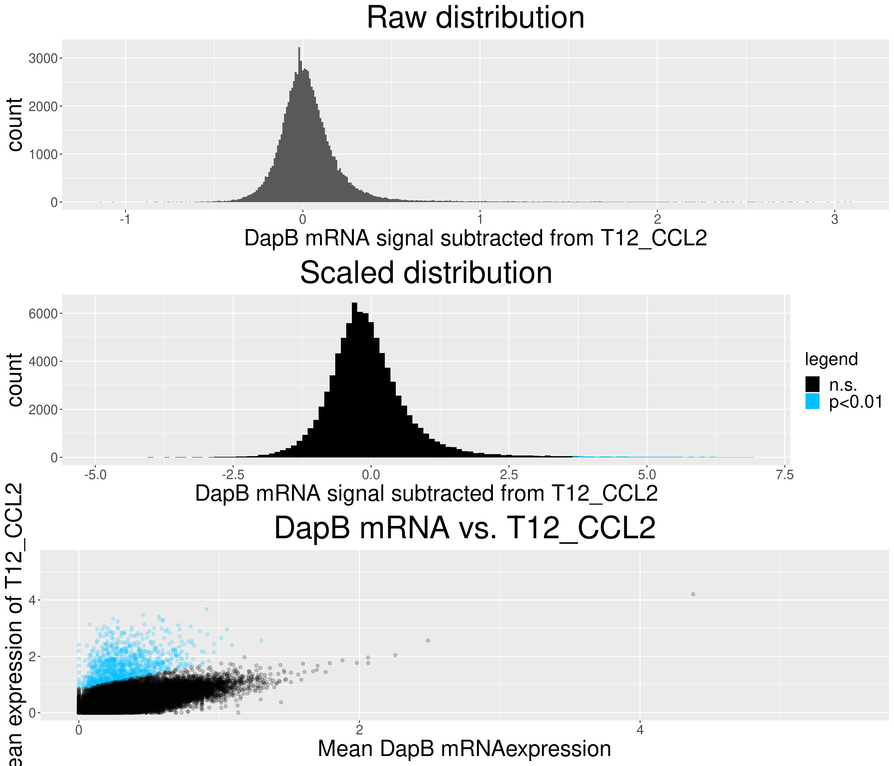
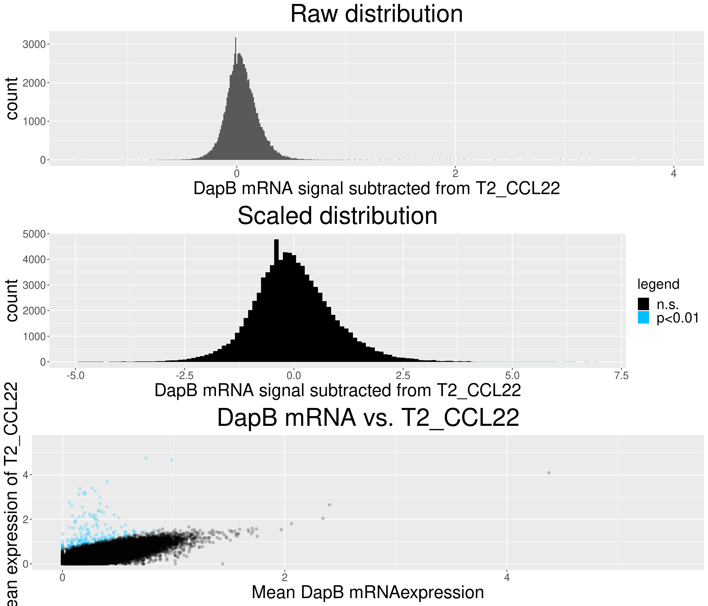
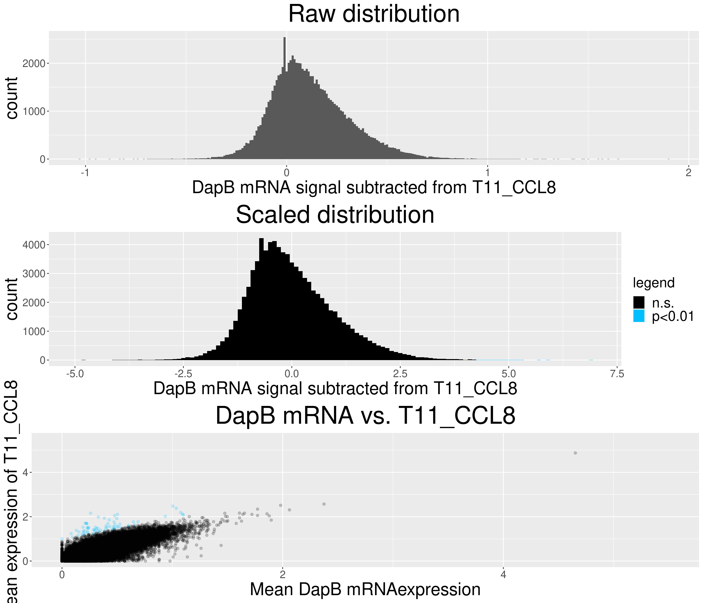
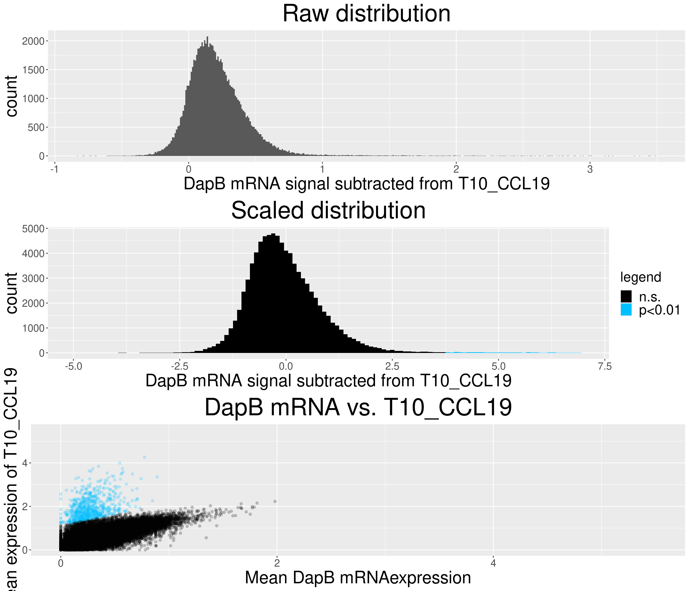
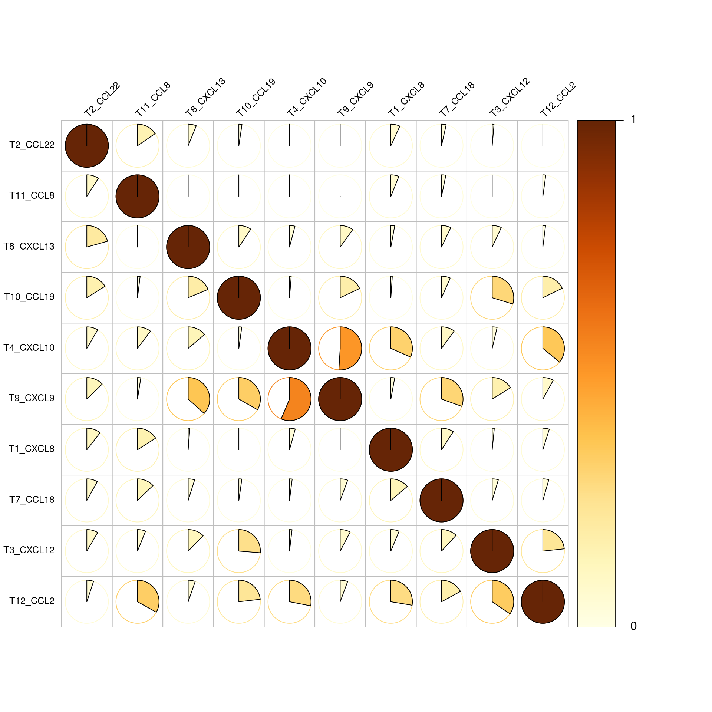
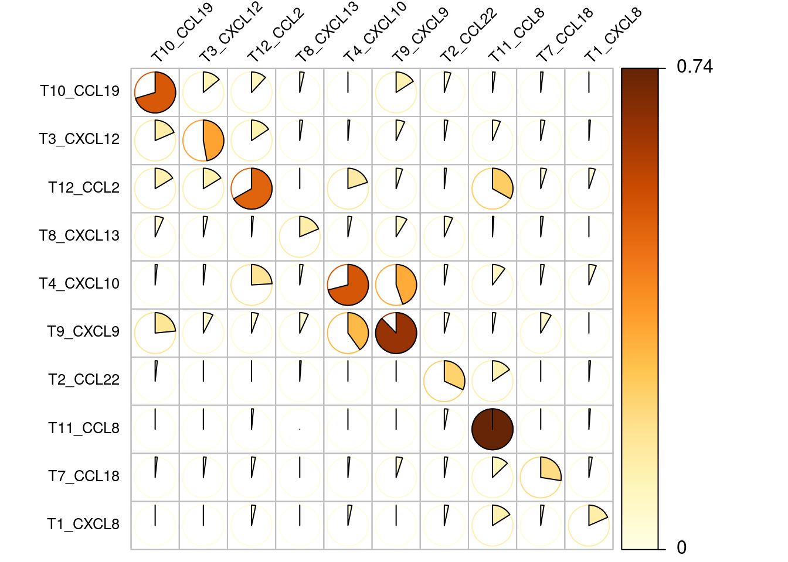

05_RNA_chemokine_expressing_cells
Tobias Hoch
2020-07-28
Last updated: 2022-02-22
Checks: 7 0
Knit directory: MelanomaIMC/
This reproducible R Markdown analysis was created with workflowr (version 1.7.0). The Checks tab describes the reproducibility checks that were applied when the results were created. The Past versions tab lists the development history.
Great! Since the R Markdown file has been committed to the Git repository, you know the exact version of the code that produced these results.
Great job! The global environment was empty. Objects defined in the global environment can affect the analysis in your R Markdown file in unknown ways. For reproduciblity it’s best to always run the code in an empty environment.
The command set.seed(20200728) was run prior to running the code in the R Markdown file. Setting a seed ensures that any results that rely on randomness, e.g. subsampling or permutations, are reproducible.
Great job! Recording the operating system, R version, and package versions is critical for reproducibility.
Nice! There were no cached chunks for this analysis, so you can be confident that you successfully produced the results during this run.
Great job! Using relative paths to the files within your workflowr project makes it easier to run your code on other machines.
Great! You are using Git for version control. Tracking code development and connecting the code version to the results is critical for reproducibility.
The results in this page were generated with repository version d246c15. See the Past versions tab to see a history of the changes made to the R Markdown and HTML files.
Note that you need to be careful to ensure that all relevant files for the analysis have been committed to Git prior to generating the results (you can use wflow_publish or wflow_git_commit). workflowr only checks the R Markdown file, but you know if there are other scripts or data files that it depends on. Below is the status of the Git repository when the results were generated:
Ignored files:
Ignored: .DS_Store
Ignored: .Rproj.user/
Ignored: Table_S4.csv
Ignored: code/.DS_Store
Ignored: code/._.DS_Store
Ignored: data/.DS_Store
Ignored: data/._.DS_Store
Ignored: data/data_for_analysis/
Ignored: data/full_data/
Unstaged changes:
Modified: .gitignore
Modified: analysis/Supp-Figure_10.rmd
Modified: analysis/_site.yml
Deleted: analysis/license.Rmd
Note that any generated files, e.g. HTML, png, CSS, etc., are not included in this status report because it is ok for generated content to have uncommitted changes.
These are the previous versions of the repository in which changes were made to the R Markdown (analysis/05_RNA_chemokine_expressing_cells.rmd) and HTML (docs/05_RNA_chemokine_expressing_cells.html) files. If you’ve configured a remote Git repository (see ?wflow_git_remote), click on the hyperlinks in the table below to view the files as they were in that past version.
| File | Version | Author | Date | Message |
|---|---|---|---|---|
| html | 73aa800 | toobiwankenobi | 2022-02-22 | add .html for static website |
| Rmd | 3da15db | toobiwankenobi | 2021-11-24 | changes for revision |
| Rmd | 434eee4 | toobiwankenobi | 2021-09-23 | Figure adaptions and new Supp Figure with gates |
| html | 4109ff1 | toobiwankenobi | 2021-07-07 | delete html files and adapt gitignore |
| html | 3203891 | toobiwankenobi | 2021-02-19 | change celltype names |
| Rmd | ee1595d | toobiwankenobi | 2021-02-12 | clean repo and adapt files |
| html | ee1595d | toobiwankenobi | 2021-02-12 | clean repo and adapt files |
| html | 3f5af3f | toobiwankenobi | 2021-02-09 | add .html files |
| Rmd | 9442cb9 | toobiwankenobi | 2020-12-22 | add all new files |
| Rmd | 77466b7 | Tobias Hoch | 2020-10-22 | work on subfigures |
| Rmd | d8819f2 | toobiwankenobi | 2020-10-08 | read new data (nuclei expansion) and adapt scripts |
| Rmd | 73881bb | toobiwankenobi | 2020-07-30 | add code to files from old repo |
| Rmd | cf46cfa | toobiwankenobi | 2020-07-28 | create files |
Introduction
Here, we define chemokine-expressing cells
Preparations
knitr::opts_chunk$set(echo = TRUE, message= FALSE)
knitr::opts_knit$set(root.dir = rprojroot::find_rstudio_root_file())Load libraries
source("code/helper_functions/detect_mRNA_expression.R")
source("code/helper_functions/validityChecks.R")
library(SingleCellExperiment)
library(dplyr)
library(ggplot2)
library(scater)
library(CATALYST)
library(reshape2)
library(LSD)
library(data.table)
library(ComplexHeatmap)
library(corrplot)
library(pheatmap)
library(grid)
library(gridExtra)
library(tidyr)
library(colorRamps)Load the single cell experiment object and the image metadata
sce <- readRDS(file = "data/data_for_analysis/sce_RNA.rds")Detect Chemokine Expressing Cells
Detection of chemokine expressing cells
for the detection of chemokine expressing cells we make use of the fact that we also measured a negative control (DapB).
# get the names of the chemokine channels without the negative control channel
chemokine_channels = rownames(sce[which(grepl("T\\d+_",rownames(sce)) & ! grepl("DapB",rownames(sce))),])
# run function to define chemokine expressing cells
output_list <- compute_difference(sce,
cellID = "cellID",
assay_name = "asinh",
threshold = 0.01,
mRNA_channels = chemokine_channels,
negative_control = "T6_DapB",
return_calc_metrics = TRUE)
# overwrite SCE object
sce <- output_list$output_scePlot results from chemokine detection
# check difference between DapB and signal (histogram)
for(i in chemokine_channels){
# subset whole data set for visualization purposes
diff_chemo <- output_list[[i]]
diff_chemo_sub <- diff_chemo[sample(nrow(diff_chemo), nrow(diff_chemo)*0.1), ]
a = ggplot(data = diff_chemo_sub, aes(x=diff)) +
geom_histogram(binwidth = 0.01) +
xlab(paste("DapB mRNA signal subtracted from", i, sep = " ")) + ggtitle("Raw distribution") +
theme(plot.title = element_text(hjust = 0.5, size = 35),
axis.title = element_text(size = 25),
axis.text = element_text(size = 15))
b = ggplot(data = diff_chemo_sub, aes(x=scaled_diff)) +
geom_histogram(binwidth = 0.1, aes(fill =
ifelse(padj <= 0.01 & scaled_diff > 0, 'p<0.01', 'n.s.'))) +
xlab(paste("DapB mRNA signal subtracted from", i, sep = " ")) + ggtitle("Scaled distribution") +
labs(fill = "legend") +
xlim(-5,7) +
scale_fill_manual(values = c("black", "deepskyblue1")) +
theme(plot.title = element_text(hjust = 0.5, size = 35),
axis.title = element_text(size = 25),
legend.text = element_text(size = 20),
legend.title = element_text(size=20),
axis.text = element_text(size = 15))
# significant cells defined by subtraction
c = ggplot(data=diff_chemo_sub, aes(x=mean_negative_control, y=mean_chemokine)) +
geom_point(alpha=0.2, aes(col =
ifelse(padj <= 0.01 & scaled_diff > 0, 'p<0.01', 'n.s.'))) +
scale_color_manual(values = c("black", "deepskyblue1")) +
xlim(0,5.5) + ylim(0,5.5) +
ylab(paste("Mean expression of", i, sep=" ")) +
xlab("Mean DapB mRNAexpression") +
ggtitle(paste("DapB mRNA vs.", i, sep = " ")) +
theme(plot.title = element_text(hjust = 0.5, size = 35),
axis.title = element_text(size = 25),
legend.position = "none",
axis.text = element_text(size = 15))
#png(file = paste("~/Daniel_volume/Rout_RNA/chemokine_detection_method_comparison/",i,"difference_distribution_BH_0.01.png", sep="_"), height = 1000, width = 1600)
grid.arrange(a,b,c, nrow = 3, ncol=1)
#dev.off()
}Warning: Removed 170 rows containing non-finite values (stat_bin).Warning: Removed 4 rows containing missing values (geom_bar).
| Version | Author | Date |
|---|---|---|
| 1dc2e93 | toobiwankenobi | 2022-02-22 |
Warning: Removed 163 rows containing non-finite values (stat_bin).
Removed 4 rows containing missing values (geom_bar).
| Version | Author | Date |
|---|---|---|
| 1dc2e93 | toobiwankenobi | 2022-02-22 |
Warning: Removed 182 rows containing non-finite values (stat_bin).
Removed 4 rows containing missing values (geom_bar).
| Version | Author | Date |
|---|---|---|
| 1dc2e93 | toobiwankenobi | 2022-02-22 |
Warning: Removed 382 rows containing non-finite values (stat_bin).
Removed 4 rows containing missing values (geom_bar).Warning: Removed 1 rows containing missing values (geom_point).
| Version | Author | Date |
|---|---|---|
| 1dc2e93 | toobiwankenobi | 2022-02-22 |
Warning: Removed 139 rows containing non-finite values (stat_bin).Warning: Removed 4 rows containing missing values (geom_bar).
| Version | Author | Date |
|---|---|---|
| 1dc2e93 | toobiwankenobi | 2022-02-22 |
Warning: Removed 269 rows containing non-finite values (stat_bin).
Removed 4 rows containing missing values (geom_bar).
| Version | Author | Date |
|---|---|---|
| 1dc2e93 | toobiwankenobi | 2022-02-22 |
Warning: Removed 273 rows containing non-finite values (stat_bin).
Removed 4 rows containing missing values (geom_bar).
| Version | Author | Date |
|---|---|---|
| 1dc2e93 | toobiwankenobi | 2022-02-22 |
Warning: Removed 68 rows containing non-finite values (stat_bin).
Removed 4 rows containing missing values (geom_bar).Warning: Removed 1 rows containing missing values (geom_point).
| Version | Author | Date |
|---|---|---|
| 1dc2e93 | toobiwankenobi | 2022-02-22 |
Warning: Removed 169 rows containing non-finite values (stat_bin).Warning: Removed 4 rows containing missing values (geom_bar).
| Version | Author | Date |
|---|---|---|
| 1dc2e93 | toobiwankenobi | 2022-02-22 |
Warning: Removed 10 rows containing non-finite values (stat_bin).
Removed 4 rows containing missing values (geom_bar).
| Version | Author | Date |
|---|---|---|
| 1dc2e93 | toobiwankenobi | 2022-02-22 |
Warning: Removed 187 rows containing non-finite values (stat_bin).
Removed 4 rows containing missing values (geom_bar).
| Version | Author | Date |
|---|---|---|
| 1dc2e93 | toobiwankenobi | 2022-02-22 |
Basic Stats
Basic numbers on the chemokine expressing cells
chemokines <- data.frame(colData(sce))
chemokines <- chemokines[, chemokine_channels]
# calculate the amount of cells that are positive for 1, 2 and multiple combinations. exclude column containing the ids (12)
single_combinations = chemokines[rowSums(chemokines[,-1]) == 1,-1]
# number of single chemokines positive cells
nrow(single_combinations)[1] 45168double_combinations = chemokines[rowSums(chemokines[,-1]) == 2,-1]
# number of single chemokines positive cells
nrow(double_combinations)[1] 8656multiple_combinations = chemokines[rowSums(chemokines[,-1]) >= 3,-1]
# number of cells that express 3 or more chemokines
nrow(multiple_combinations)[1] 2427# number of double positives per chemokine
double_counts <- colSums(double_combinations)
# frequency matrix and corrplot for frequency matrix
double_combinations[double_combinations == 0] <- NA
count_matrix = psych::pairwiseCount(x=double_combinations)
# normalize the frequency matrix by the amount of double combinations that occur for each chemokine
frequency_matrix <- count_matrix
for (i in colnames(count_matrix)){
frequency_matrix[,i] <- frequency_matrix[,i]/double_counts[i]
}Frequency double-positive cells
The next plot shows the frequencies of all double positive cell occurences. e.g. of all T4_CXCL10 expressing cells that also express another chemokine more than 50% express T9_CXCL9.
corrplot(frequency_matrix, is.corr = FALSE, tl.col = 'black', method = 'pie', type = 'full',
tl.srt = 45, tl.cex = 0.8, tl.offset = 0.5, cl.length = 2, cl.cex = 1, cl.align.text = "l", cl.ratio = 0.3,
diag=TRUE, order = "hclust")
| Version | Author | Date |
|---|---|---|
| 1dc2e93 | toobiwankenobi | 2022-02-22 |
Corrplot of Frequency matrix
Now we normalize the numbers of double positives by the numbers of all respective positive chemokines. this shows that usually between 20-40 percent of chemokine expressing cells are double positive expressors.
single_counts <- colSums(single_combinations)
frequency_matrix <- count_matrix
for (i in colnames(count_matrix)){
frequency_matrix[,i] <- frequency_matrix[,i]/single_counts[i]
}
corrplot(frequency_matrix, is.corr = FALSE, tl.col = 'black', method = 'pie', type = 'full',
tl.srt = 45, tl.cex = 0.8, tl.offset = 0.5, cl.length = 2, cl.cex = 1, cl.align.text = "l", cl.ratio = 0.3,
cl.lim = c(0,1), diag=TRUE, order = "hclust")Warning in text.default(pos.xlabel[, 1], pos.xlabel[, 2], newcolnames, srt =
tl.srt, : "cl.lim" is not a graphical parameterWarning in text.default(pos.ylabel[, 1], pos.ylabel[, 2], newrownames, col =
tl.col, : "cl.lim" is not a graphical parameterWarning in title(title, ...): "cl.lim" is not a graphical parameter
| Version | Author | Date |
|---|---|---|
| 1dc2e93 | toobiwankenobi | 2022-02-22 |
SCE object
Add data to SCE object
# general chemokine producer tag for every cell (logical binary)
sce$chemokine <- ifelse(rowSums(data.frame(colData(sce)[,chemokine_channels])) > 0, TRUE, FALSE)
# rename colData entry names
idx <- match(chemokine_channels, colnames(colData(sce)))
for(i in idx){
colnames(colData(sce))[i] <- strsplit(colnames(colData(sce))[i], split = "_")[[1]][2]
}Add expressor info and colour_vector (with control samples)
cur_df <- colData(sce)
cur_df <- as_tibble(cur_df)
cur_df <- cur_df[,grepl("CCL|CXCL|Dap",colnames(cur_df))]
for(i in colnames(cur_df)){
cur_df[[i]] <- ifelse(cur_df[[i]]== 1,i,"NA")
}
cur_df <- cur_df %>%
unite(expressor,sep = "_",na.rm =TRUE,remove=FALSE)
cur_df$expressor <- gsub("NA_","",cur_df$expressor)
cur_df$expressor <- gsub("_NA","",cur_df$expressor)
# summary table of all combinations
summary_cur_df <- table(cur_df$expressor)
# order table according to abundance of combinations
summary_cur_df<- summary_cur_df[order(-as.numeric(summary_cur_df))]
# combinations with more than 600 occurrences
targets <- names(which(summary_cur_df > 600))
targets <- targets[!targets == "NA"]
# add expressor info to sce object
sce$expressor <- cur_df$expressor
# add target names to metadata
metadata(sce)$chemokines_morethan600_withcontrol <- targetsSave SCE object
saveRDS(object = sce, file = "data/data_for_analysis/sce_RNA.rds")
sessionInfo()R version 4.1.2 (2021-11-01)
Platform: x86_64-pc-linux-gnu (64-bit)
Running under: Ubuntu 20.04.3 LTS
Matrix products: default
BLAS/LAPACK: /usr/lib/x86_64-linux-gnu/openblas-pthread/libopenblasp-r0.3.8.so
locale:
[1] LC_CTYPE=en_US.UTF-8 LC_NUMERIC=C
[3] LC_TIME=en_US.UTF-8 LC_COLLATE=en_US.UTF-8
[5] LC_MONETARY=en_US.UTF-8 LC_MESSAGES=en_US.UTF-8
[7] LC_PAPER=en_US.UTF-8 LC_NAME=C
[9] LC_ADDRESS=C LC_TELEPHONE=C
[11] LC_MEASUREMENT=en_US.UTF-8 LC_IDENTIFICATION=C
attached base packages:
[1] grid stats4 stats graphics grDevices utils datasets
[8] methods base
other attached packages:
[1] colorRamps_2.3 tidyr_1.2.0
[3] gridExtra_2.3 pheatmap_1.0.12
[5] corrplot_0.92 ComplexHeatmap_2.10.0
[7] data.table_1.14.2 LSD_4.1-0
[9] reshape2_1.4.4 CATALYST_1.18.1
[11] scater_1.22.0 scuttle_1.4.0
[13] ggplot2_3.3.5 dplyr_1.0.7
[15] SingleCellExperiment_1.16.0 SummarizedExperiment_1.24.0
[17] Biobase_2.54.0 GenomicRanges_1.46.1
[19] GenomeInfoDb_1.30.1 IRanges_2.28.0
[21] S4Vectors_0.32.3 BiocGenerics_0.40.0
[23] MatrixGenerics_1.6.0 matrixStats_0.61.0
[25] workflowr_1.7.0
loaded via a namespace (and not attached):
[1] utf8_1.2.2 tidyselect_1.1.1
[3] BiocParallel_1.28.3 Rtsne_0.15
[5] aws.signature_0.6.0 flowCore_2.6.0
[7] munsell_0.5.0 ScaledMatrix_1.2.0
[9] codetools_0.2-18 withr_2.4.3
[11] colorspace_2.0-2 highr_0.9
[13] knitr_1.37 rstudioapi_0.13
[15] ggsignif_0.6.3 labeling_0.4.2
[17] git2r_0.29.0 GenomeInfoDbData_1.2.7
[19] mnormt_2.0.2 polyclip_1.10-0
[21] farver_2.1.0 flowWorkspace_4.6.0
[23] rprojroot_2.0.2 vctrs_0.3.8
[25] generics_0.1.2 TH.data_1.1-0
[27] xfun_0.29 R6_2.5.1
[29] doParallel_1.0.16 ggbeeswarm_0.6.0
[31] clue_0.3-60 rsvd_1.0.5
[33] bitops_1.0-7 DelayedArray_0.20.0
[35] assertthat_0.2.1 promises_1.2.0.1
[37] scales_1.1.1 multcomp_1.4-18
[39] beeswarm_0.4.0 gtable_0.3.0
[41] beachmat_2.10.0 processx_3.5.2
[43] RProtoBufLib_2.6.0 sandwich_3.0-1
[45] rlang_1.0.0 GlobalOptions_0.1.2
[47] splines_4.1.2 rstatix_0.7.0
[49] hexbin_1.28.2 broom_0.7.12
[51] yaml_2.2.2 abind_1.4-5
[53] backports_1.4.1 httpuv_1.6.5
[55] RBGL_1.70.0 tools_4.1.2
[57] psych_2.1.9 ellipsis_0.3.2
[59] jquerylib_0.1.4 RColorBrewer_1.1-2
[61] ggridges_0.5.3 Rcpp_1.0.8
[63] plyr_1.8.6 base64enc_0.1-3
[65] sparseMatrixStats_1.6.0 zlibbioc_1.40.0
[67] purrr_0.3.4 RCurl_1.98-1.5
[69] ps_1.6.0 FlowSOM_2.2.0
[71] ggpubr_0.4.0 GetoptLong_1.0.5
[73] viridis_0.6.2 cowplot_1.1.1
[75] zoo_1.8-9 ggrepel_0.9.1
[77] cluster_2.1.2 fs_1.5.2
[79] magrittr_2.0.2 ncdfFlow_2.40.0
[81] scattermore_0.7 circlize_0.4.13
[83] tmvnsim_1.0-2 mvtnorm_1.1-3
[85] whisker_0.4 ggnewscale_0.4.5
[87] evaluate_0.14 XML_3.99-0.8
[89] jpeg_0.1-9 shape_1.4.6
[91] ggcyto_1.22.0 compiler_4.1.2
[93] tibble_3.1.6 crayon_1.4.2
[95] ggpointdensity_0.1.0 htmltools_0.5.2
[97] later_1.3.0 RcppParallel_5.1.5
[99] aws.s3_0.3.21 DBI_1.1.2
[101] tweenr_1.0.2 MASS_7.3-55
[103] Matrix_1.4-0 car_3.0-12
[105] cli_3.1.1 parallel_4.1.2
[107] igraph_1.2.11 pkgconfig_2.0.3
[109] getPass_0.2-2 xml2_1.3.3
[111] foreach_1.5.2 vipor_0.4.5
[113] bslib_0.3.1 XVector_0.34.0
[115] drc_3.0-1 stringr_1.4.0
[117] callr_3.7.0 digest_0.6.29
[119] ConsensusClusterPlus_1.58.0 graph_1.72.0
[121] rmarkdown_2.11 DelayedMatrixStats_1.16.0
[123] curl_4.3.2 gtools_3.9.2
[125] rjson_0.2.21 nlme_3.1-155
[127] lifecycle_1.0.1 jsonlite_1.7.3
[129] carData_3.0-5 BiocNeighbors_1.12.0
[131] viridisLite_0.4.0 fansi_1.0.2
[133] pillar_1.7.0 lattice_0.20-45
[135] plotrix_3.8-2 fastmap_1.1.0
[137] httr_1.4.2 survival_3.2-13
[139] glue_1.6.1 png_0.1-7
[141] iterators_1.0.13 Rgraphviz_2.38.0
[143] nnls_1.4 ggforce_0.3.3
[145] stringi_1.7.6 sass_0.4.0
[147] BiocSingular_1.10.0 CytoML_2.6.0
[149] latticeExtra_0.6-29 cytolib_2.6.1
[151] irlba_2.3.5